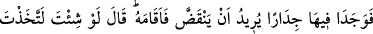

yapmaktadır. Dolayısıyla o da Rasûlullah (s.a.)’e tâbi olanlardan olmuştur. Nitekim Îsâ
(a.s.) indiği zaman Rasûlullah (s.a.)’e niyâbeten O’nun şeriatıyla hükmedecektir. Çünkü
o, Peygamber (s.a.)’e tâbi olanlardandır. Bu îzahta, Îsâ (a.s.)’ın Beytü’l-makdis’te
Rasûlullah (s.a.) ile buluşup tanıştıklarına işaret vardır. Dolayısıyla o da sahâbidir.
İnsânu’l-uyûn’da böyle geçmektedir.
Fakir (Bursevî) der ki: Sahâbî olmanın Îsâ (a.s.)’a tahsis edilmesinin mânâsı yoktur.
Çünkü daha önce de zikrettiğimiz gibi Rasûlullah (s.a.) Îsâ (a.s.)’la buluştuğu gibi Hızır
ve İlyâs (aleyhime’s-selâm)’la da buluşmuştur. Dolayısıyla onlar da sahâbîdirler.
Burada Hz. Peygamber (s.a.)’in şerefi ortaya konmaktadır. Şöyle ki, bu değerli
peygamberler O’nun (s.a.) ümmetinden olmak için Allah Teâlâ’dan mühlet istemişlerdir.
Nebîler topluluğunun başı ve müttakîlerin ulusu
Ev ednâ makamının sultanı, ümmetlerin önderi
77. Yine yürüdüler. Nihâyet bir köy halkına varıp onlardan yiyecek istediler.
Ancak köy halkı onları misafir etmekten kaçındılar. Derken orada yıkılmak üzere
bulunan bir duvarla karşılaştılar. (Hızır) hemen onu doğrulttu. Mûsâ: Dileseydin,
elbet buna karşı bir ücret alırdın, dedi.
“Yine yürüdüler. Nihâyet bir köy halkına varıp onlardan yiyecek istediler.” Yâni
onlardan kendilerini misafir edip doyurmalarını istediler. Mûsâ ve Hızır (a.s.)’ın
onlardan yemek istemedikleri, fakat onlara misafir olmalarının zâten yiyecek istemek
gibi olduğu da söylenmiştir.
Vardıkları yer Antakya’dır. Burası vaktiyle bölgedeki şehirlerin merkeziydi. Etrafı
nehirler ve büyük taş surlarla çevrilmiş, içi beş tepeden oluşmakta ve genişliği on iki
mildi. Nitekim el-Kâmus’ta böyle denilmektedir.
Kâşifî der ki: “Antakya halkı gece olunca şehrin kapısını kapatırlar ve kimseye
açmazlardı. Akşam vakti Mûsâ ve Hızır (a.s.) o şehre vardılar ve girmek istediler.
Kimse onlara kapıyı açmadı. Şehir halkına ‘Biz hem garibiz, hem de açız. Bizi mâdem
şehre almıyorsunuz, bari bize yiyecek gönderin.’ dediler.”
el-Es’iletü’l-mukhime’de der ki: Mûsâ (a.s.), bu yolculukta yemek istediği halde
verilmedi. Halbuki Şuayb (a.s.)’ın kızları yerine (davarları) sulayınca, kendisi taleb
etmeden ona yemek verildi. Nitekim Allah Teâlâ şöyle buyuruyor: “(O iki kızdan biri):
Babam seni çağırıyor, bizim için hayvanları sulamanın ücretini verecek” dedi.” (el-